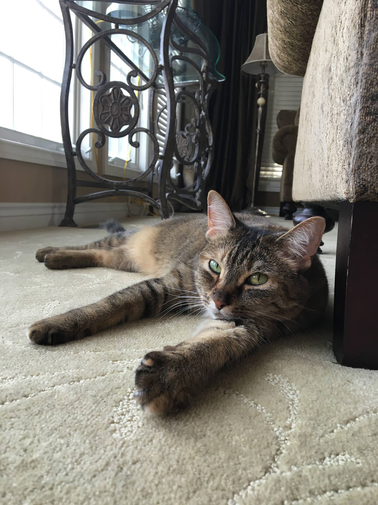
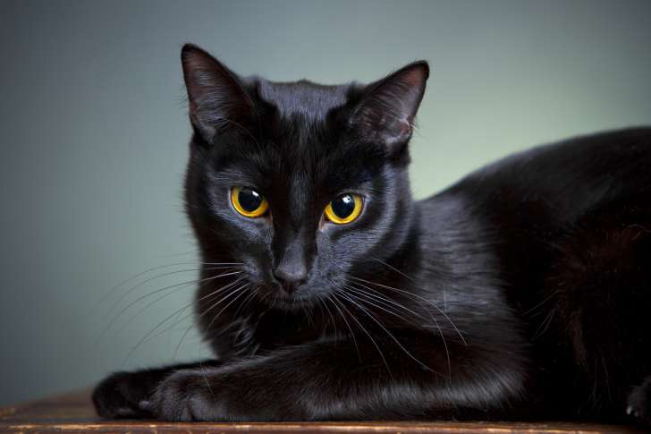

Before we adopted my cat, her name was Tornado. Soon after adopting her, we realized this was an accurate name for her, but still we changed it. We named her Kizzie. She would run around the house going crazy at all hours of the day. After she calmed down though, she was very friendly and liked anyone who came around.

Now, Kizzie loves me, my mom, and my brother. She will tolerate my dad and my sister, but she isn’t so sure about them since they weren’t around a lot when we first got her. If anyone else comes around though, she often hisses. She never attacks anyone though. Kizzie is now six years old and lives at home with my mom.
When I graduate college, I want to get a cat of my own. I think black cats are really cute. I might feel bad getting one with Kizzie at home though.
